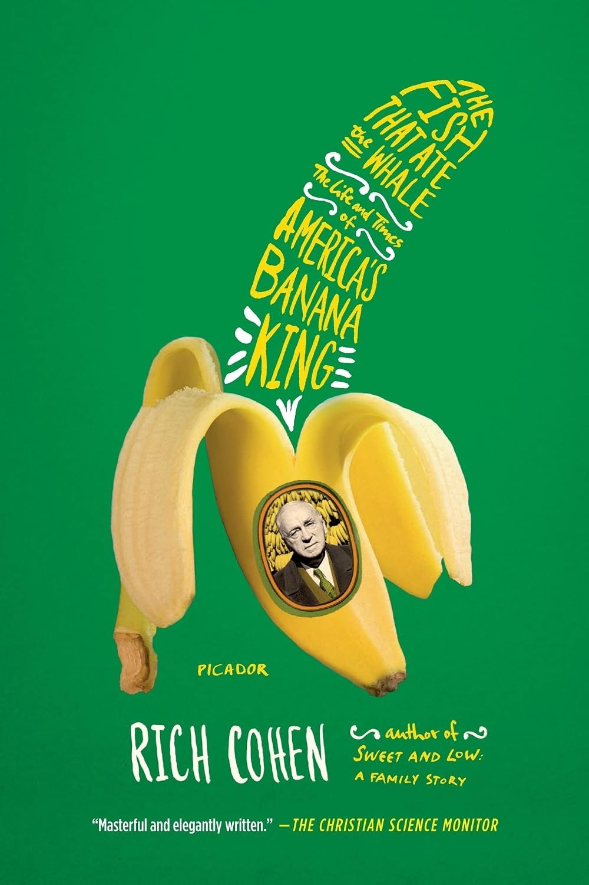

1891年，一个十四岁的犹太少年从俄国比萨拉比亚的基希讷乌附近漂洋过海，在阿拉巴马州塞尔玛下了船，身无分文，据说曾以每周一美元的工钱替人抓鸡。他叫施穆尔·兹穆里（Schmuel Zmurri），后来美国人叫他萨姆·泽穆雷（Samuel Zemurray），"香蕉萨姆"。他在码头上盯上了别人不要的东西——轮船公司当作废品倾倒的"熟蕉"（ripes），那些熟过头、卖不进正规渠道的香蕉。他低价买下，用火车抢在腐烂前运到内陆杂货店脱手。靠着最初约一百五十美元的本钱，他到二十一岁时已攒下约十万美元。作家里奇·科恩（Rich Cohen）——《名利场》与《滚石》的特约编辑，写过《犹太硬汉》（Tough Jews）和家族回忆录《又甜又低》（Sweet and Low）——把这个从熟蕉贩子到跨国巨头掌门人的故事，写成了2012年由 Farrar, Straus and Giroux 出版的这本传记。
泽穆雷的野心很快越过了国境。1910年他在洪都拉斯库亚梅尔河沿岸买下约五千英亩土地，修铁路、架桥、辟种植园，创办库亚梅尔水果公司（Cuyamel Fruit Company）。当洪都拉斯政府准备接受一项美国牵头的债务安排、威胁到他的免税地位时，泽穆雷做了件惊人的事：他不顾美国国务卿菲兰德·诺克斯的当面警告，出钱资助了一场政变。他雇佣雇佣兵将领李·克里斯马斯（Lee Christmas）和绰号"机枪"的枪手盖伊·莫洛尼（Guy Molony），用一艘退役的美国海军舰艇"大黄蜂号"（Hornet）把流亡前总统曼努埃尔·博尼利亚送回国夺权。博尼利亚上台后，泽穆雷得到了他想要的特许权。
书名里的"鱼"与"鲸鱼"，指的是弱小的库亚梅尔与庞然大物联合果品公司（United Fruit）之间的对抗。1929年，在美国国务院的施压下，联合果品以约三千一百五十万美元的股票买下了库亚梅尔，泽穆雷由此成为联合果品最大的个人股东。大萧条中，这家公司在波士顿老派管理层手里股价跌去约九成。泽穆雷收集了足够的委托投票权，走进董事会，把一叠委托书拍在桌上，撂下那句后来广为流传的话："You've been fucking up this business long enough. I'm going to straighten it out."（你们把这门生意搞砸得够久了，我来把它理顺。）他就此夺得控制权，1938年出任总裁。科恩没有回避这段历史的阴暗面：1954年，为扳倒推行土地改革、要征用联合果品闲置土地的危地马拉总统哈科沃·阿本斯，泽穆雷雇来"公关之父"爱德华·伯内斯（Edward Bernays）操办反阿本斯的舆论攻势，这场运动最终汇入中情局代号"成功行动"（PBSUCCESS）的政变。
《基督教科学箴言报》的书评称此书"masterful and elegantly written"（笔法老到，文字优雅），并把它读作"a cautionary tale for the ages"——一则关于傲慢如何毁掉最强大公司的警世故事。《纽约时报书评》的马克·刘易斯写道，科恩的书"自成一格：辛辣、轻快、写得活灵活现"（pungent, breezy, vividly written psychodramas）。传记作家沃尔特·艾萨克森在护封推荐语里说，本书"以令人愉悦的活力"复述了泽穆雷在中美洲的军事与外交手腕。这本书旧金山与新奥尔良两地报纸都选进了年度好书。在投资圈里，它也有拥趸：专注收购家族小企业的投资人布伦特·贝肖尔（Brent Beshore）在帕特里克·奥肖内西的播客《Invest Like the Best》中被问到哪些读物塑造了他的投资方法时，先提到彼得·考夫曼编纂的《穷查理宝典》，随后说，"至于可能没那么广为人知的书，《吞噬鲸鱼的小鱼》对我影响很大"——泽穆雷以小博大、贴着地面亲力亲为的经营方式，恰与贝肖尔看重的东西相通。它讲的不只是一个移民白手起家的美国梦，也是一个关于权力如何滋生越界、免税特许权如何演变成推翻他国政府的故事——泽穆雷1891年赤贫上岸，六十九年后死在新奥尔良最气派的宅邸里，跻身世上最富有、最有权势的人之列，而这份成就的代价，被科恩摊在了桌面上。